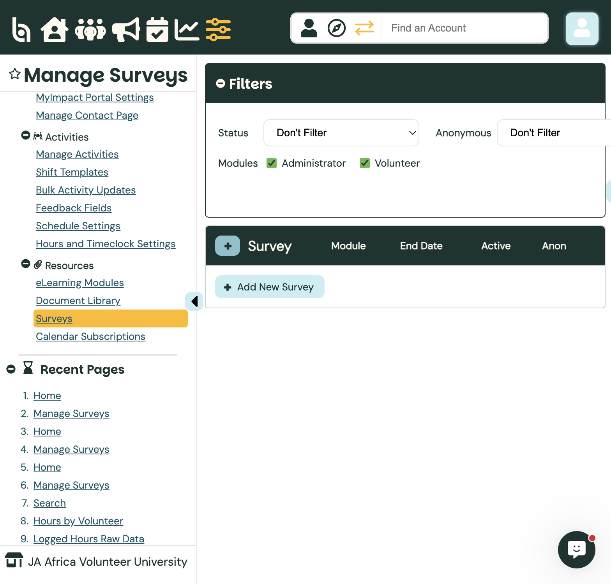
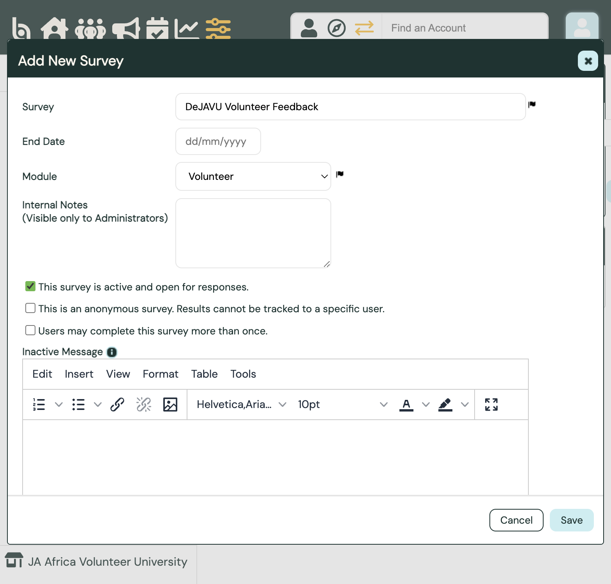
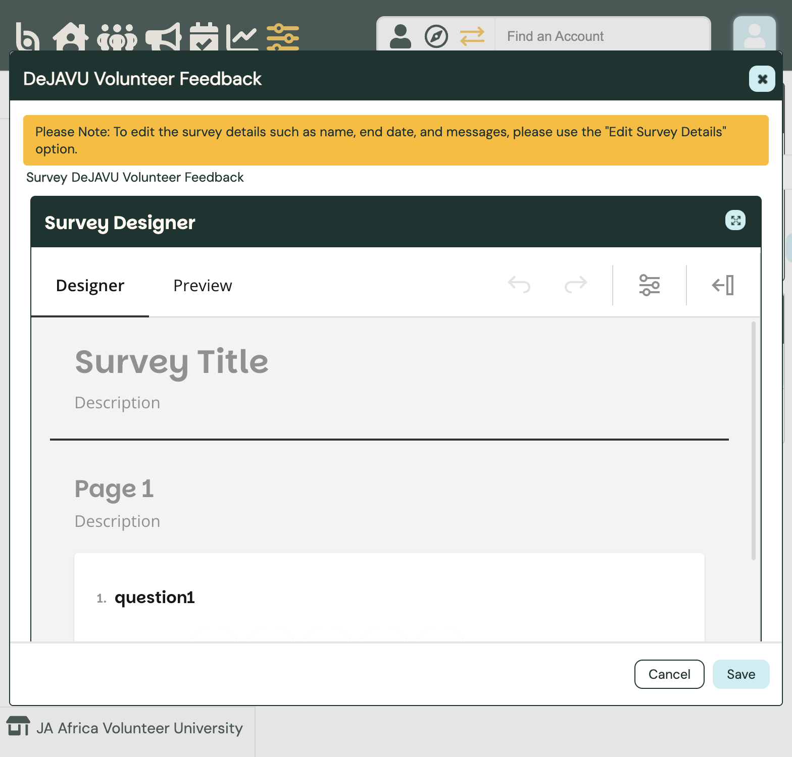
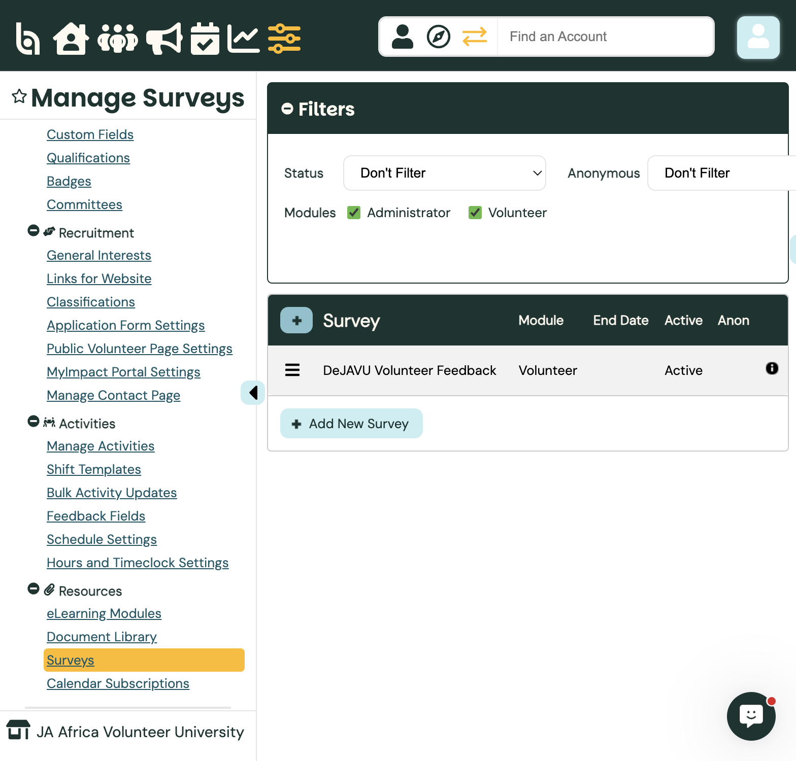
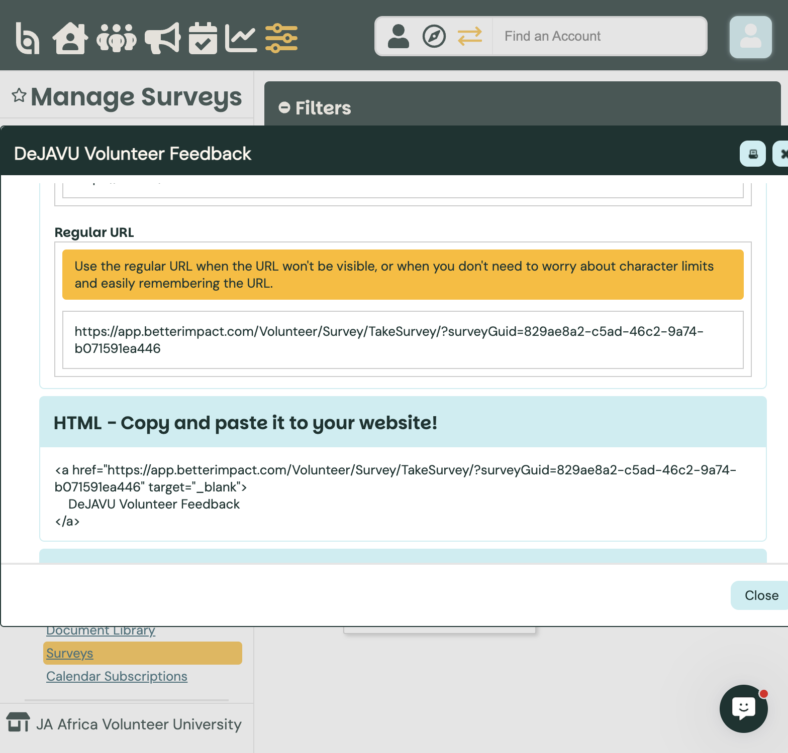
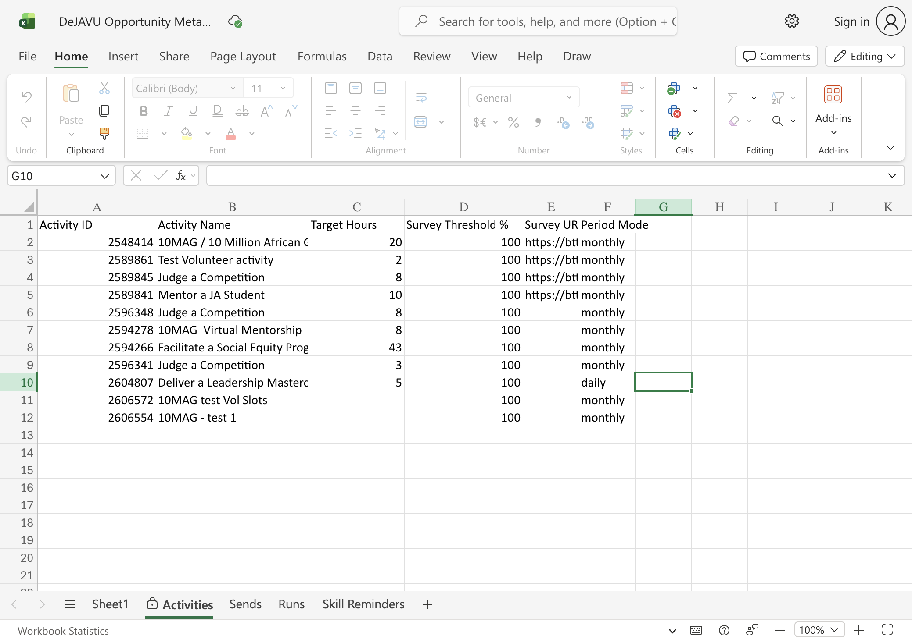

Admin guide
Audience · AdministratorSurveys — Volunteer Feedback
Better Impact Surveys collect feedback after volunteers log hours on an opportunity. Create the survey in your org, copy its link, then paste that link into the DeJAVU Opportunity Metadata spreadsheet so the hours job can email it when target hours are reached. See also Creating Opportunities (step 6).
Path: Configuration → Resources → Surveys · Docs: BI comprehensive guide to surveys
Open Manage Surveys
Switch into JA Africa Volunteer University. Click Configuration, then under Resources choose Surveys.
Use + Add New Survey to create a feedback form. The list shows each survey’s module, end date, and whether it is active.

Surveys Add New SurveySurveys live in the org where you create them Volunteers must be logged in to answer
Set survey details
Click + Add New Survey. Fill in the top of the form:
Survey — clear name (e.g. DeJAVU Volunteer Feedback).
Module — choose Volunteer for DeJAVU feedback.
End Date — optional; survey closes after this day.
Leave This survey is active checked so volunteers can respond. For DeJAVU tracking, keep the survey not anonymous so you can see who answered in reports (unless your programme requires anonymity).

Survey name Module · VolunteerAfter the first response, you cannot change anonymous / multiple-submission settings. Scroll down in the same window to build questions, then click Save.
Add questions in the designer
In the Survey Designer, click Add Question or pick a type from the toolbox. For satisfaction feedback, Rating Scale works well. Add at least one required question so reports stay usable.
Use Preview to check how it looks. Click Save when you are done.

Your question DesignerOpen the survey menu
After you save, the survey appears in the list. Click the options menu (three lines) on that row.
From here you can Generate Link, Edit Survey Content, View Responses, or Delete.

Options menu Your survey nameCopy the survey link for the tracker
Choose Generate Link. On the Regular Survey Link tab, copy the Regular URL (or Short URL if you prefer).
Volunteers open the link in a browser (not inside the MyImpact app). They must sign in with their volunteer account.

Copy Regular URLThis is the same link you paste into the spreadsheet Survey URL column — see step 6.
Link the survey to an opportunity (tracker)
When you create an opportunity, register it in the DeJAVU Opportunity Metadata spreadsheet (JA Africa staff). Paste the survey link into Survey URL, or leave blank to use the default feedback survey.
Full walkthrough: Creating Opportunities — step 6, Register target hours in the survey tracker.

Activity Name must match BI Survey URLActivity Name matches Better Impact exactly Target Hours = minimum before email sends Start / End dates match the opportunity
View responses
On the survey row, open the options menu and choose View Responses. You can filter, chart answers, and Export CSV for analysis.
If the survey is not anonymous, you can also see responses on a volunteer’s profile under Reports.
Survey answers do not update Skills Survey custom fields or qualifications — use surveys for feedback and M&E, not for skills data.